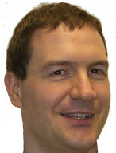
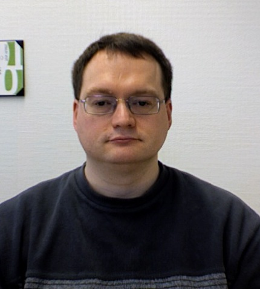

Current Developers on OpenOffice.org for Mac OSX X Port
This page contains a photo and description of everyone who helps out with the Mac Port of OpenOffice. You can also take a look at our Frappr page.
Eric Bachard
Eric Bachard is a French Professor at the University of Technology of Belfort Montbeliard, France. He is the Co-Lead of the Education Project. He has been working on the Mac OS X port since summer 2003, and has contributed to the OpenOffice.org 2.0 port Mac OS X, the Aqua port and the Mac Intel port.
Éric Bischoff
Éric is 42, French and living in Strasbourg. He is the co-founder of the Bureau Cornavin, a technical translation and technical writing company. His contributions to OOo so far are the KDE address book connector and the KDE settings backend.
Herbert Dürr

Herbert works at Sun Microsystems on topics like graphics, text and internationalization.
With a background in electronics engineering he spent most of his career in software development
and systems integration. He graduated from the University of Karlsruhe, worked at the FhG, then IBM and now at SUN on topics from system storage, micro mechanics, optical systems, image processing, performance analysis, typography, i18n and graphics.
Pavel Janik
Pavel Janík (29) is software and security consultant and architect living in small city Rudná, close to Prague, CZ. He specializes on large enterprises and government. He is working on the build related stuff of both Mac OS X platforms and sometimes jumps into something else like native menus, native file and folder picker etc.
Etsushi Kato
Etsushi Kato is a researcher in environmental studies, living in Japan. Etsushi Kato was born in 1974. His contribution in OOo Mac Port is mostly related to the text and font handling, especially related to internationalization. He is a big fan of opensource software, and also involved with an another project about multilingual input method framework (http://code.google.com/p/uim/).
Philipp Lohmann
 Philipp was born in 1970 and has begun developing for OpenOffice.org 1996 when it was still closed source and called StarOffice created by the small software vendor StarDivision. Currently Philipp is the gsl module owner which means he needs to fix all the bugs in vcl - and produce them too :-)
Shaun McDonald
Shaun is a graduate of Computer Science at Heriot-Watt University, Edinburgh. He is 20 years old and living in Edinburgh, Scotland. He has been helping with the development of the OpenOffice.org Mac Porting Website. He has also helped with some testing, and bug fixes.
Maho Nakata
Maho Nakata is a Japanese, born in 1974, and post doctoral fellow at RIKEN, living in Tokyo. He has been actively providing packages for MacOSX, fixing small issues for several years. He is the lead of QA project and also Japanese native language project.
Ismael Merzaq
Ismael is a second year student at INSA de Lyon (France), an engineer school. He was born in 1987. He has contributed to the mac porting project by improving native menus (key accelerators and images in menus). He is also working on native graphic functions.
Alexis Pigeon
Alexis Pigeon was born in 1980. He is French but living in Barcelona, Spain. He graduated in 2003 as a CS engineer, and since 2005 has been working for a spanish company in their IT department.
Sébastien Plisson
Sébastien PLISSON is a French software engineer at SNCF (French Railways) in Lyon. He began working on OOo mac porting, in Jan. 2007, by working on text layout and fonts.
Tino Rachui
Tino Rachui lives in Ahrensburg, Germany. He has over 5 years of OpenOffice.org development experience including Support and extension of the System Abstraction Layer (SAL); Window Sytem integration (clipboard, drag & Drop, File Picker); OpenOffice.org Writer Core and Word filter development. He has been part of the Mac OS X porting team since July 2005. He is responsible for porting VCL, particular window and message handling.